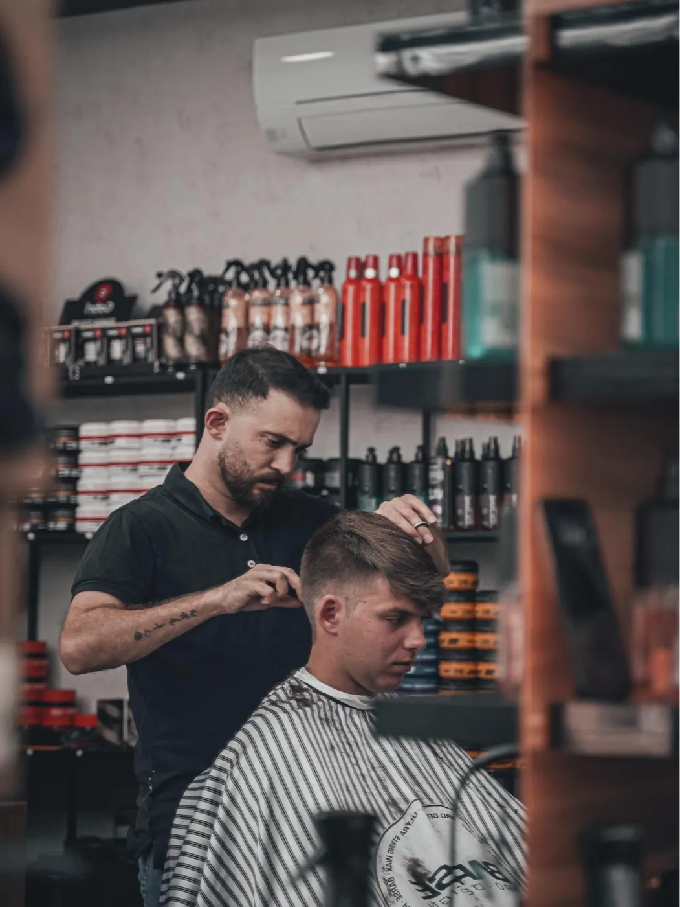
Knippen
Een fade, een klassieke zijscheiding of gewoon wat korter: we knippen wat jij vraagt, afgestemd op je haartype.
- Fades
- Klassiek
- Ook kinderen
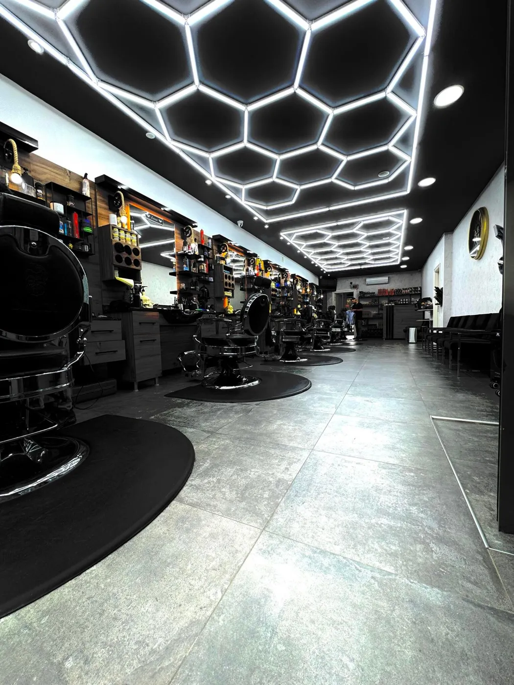
Knippen, baard trimmen of een klassieke scheerbeurt met warme handdoek. Je hoeft niets te reserveren: loop binnen aan de Schaluin en een van onze zes barbiers neemt je erbij.
Elke beurt begint met een korte babbel: wat wil je, wat past bij je haar. Pas dan gaat de tondeuse aan.

Een fade, een klassieke zijscheiding of gewoon wat korter: we knippen wat jij vraagt, afgestemd op je haartype.
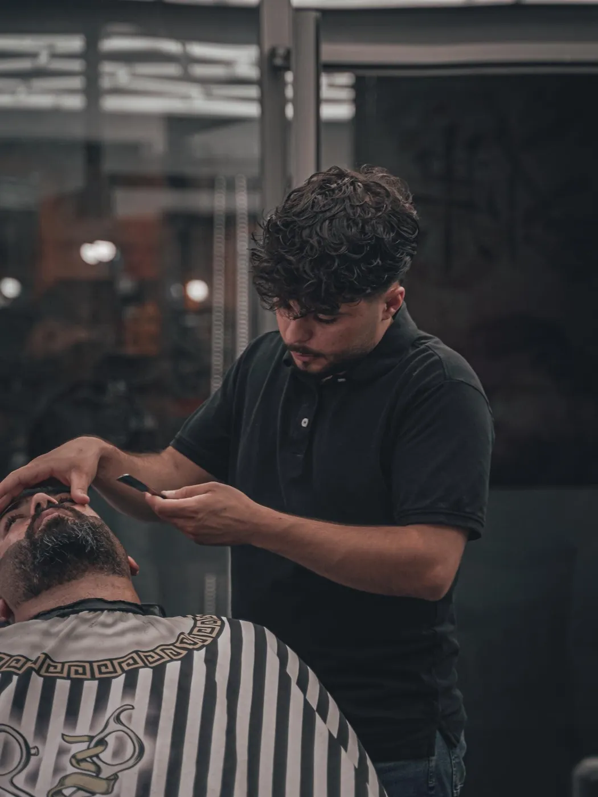
Je baard bijgewerkt en mooi in vorm, met strakke lijnen. Je krijgt er meteen tips bij om hem thuis zelf goed te verzorgen.
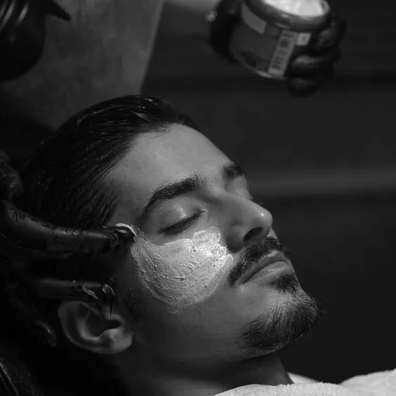
De klassieke scheerbeurt: warme handdoeken, een glad resultaat en een frisse aftershave. We sluiten af met een korte gezichtsmassage.
Een greep uit wat er de voorbije weken bij ons de deur uitging. Elke dag komt er nieuw werk bij op Instagram.
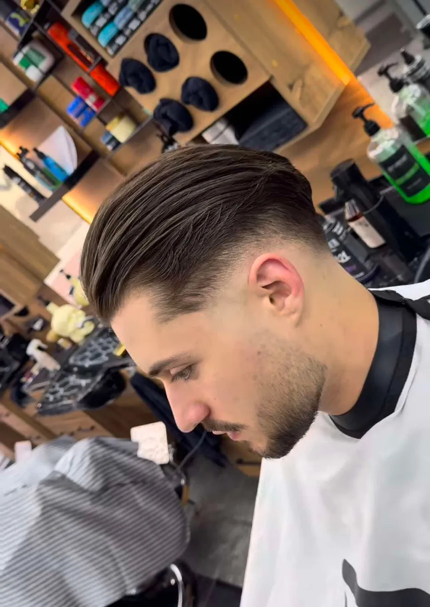
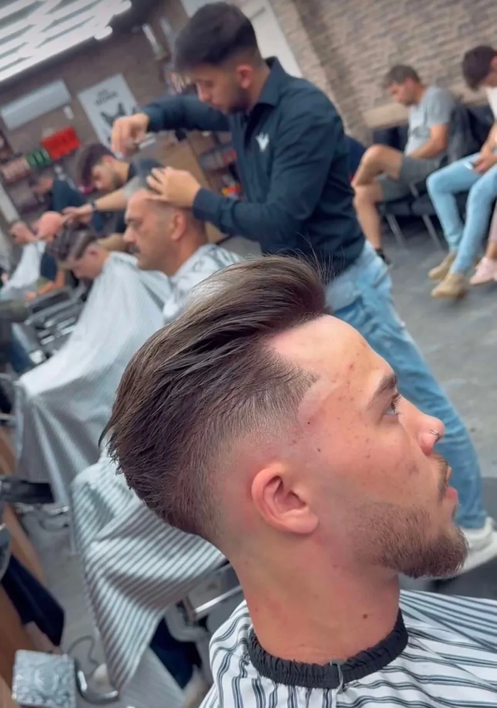
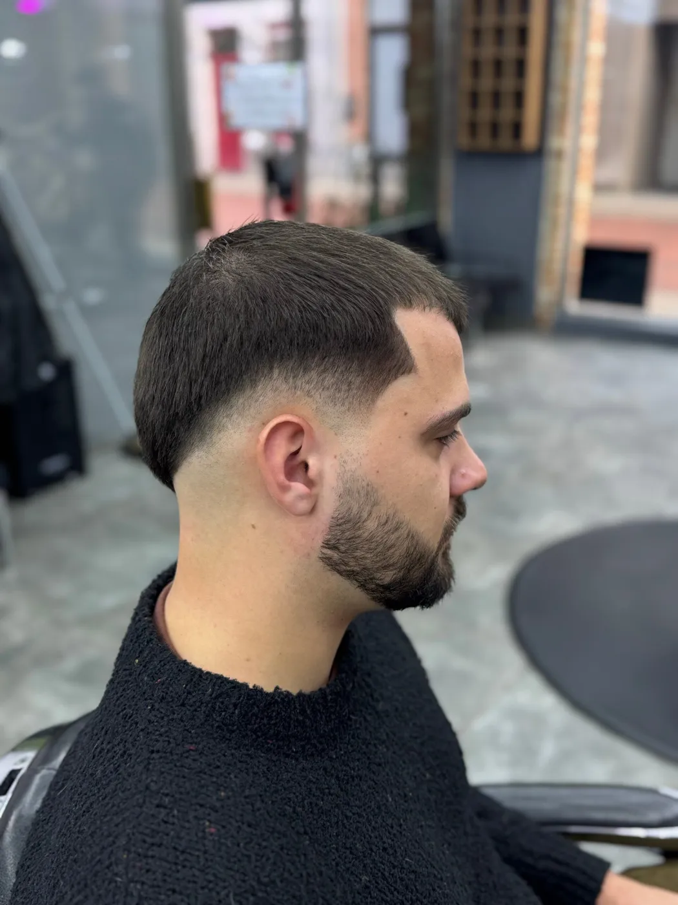
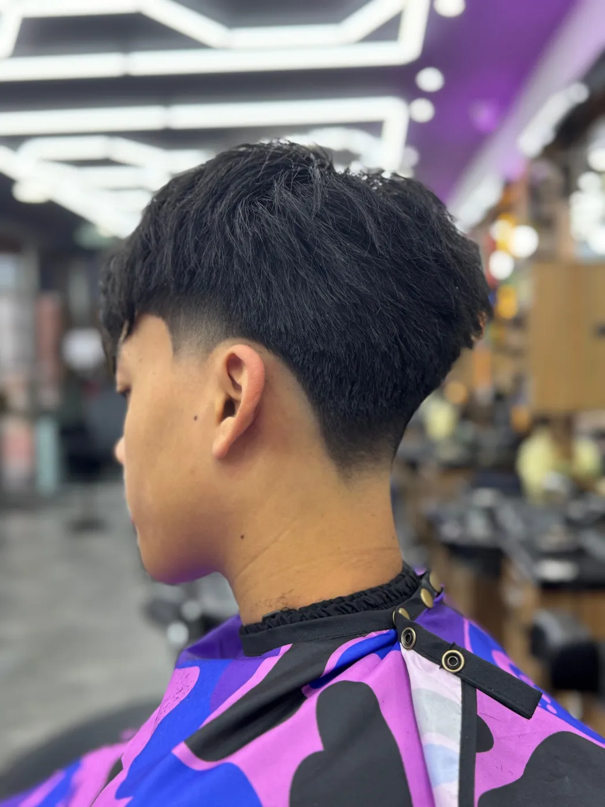
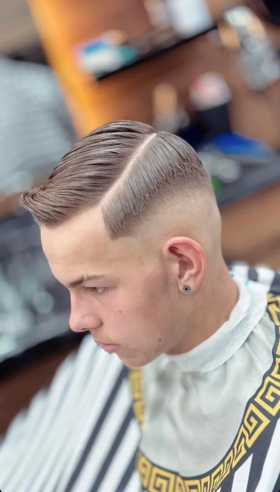
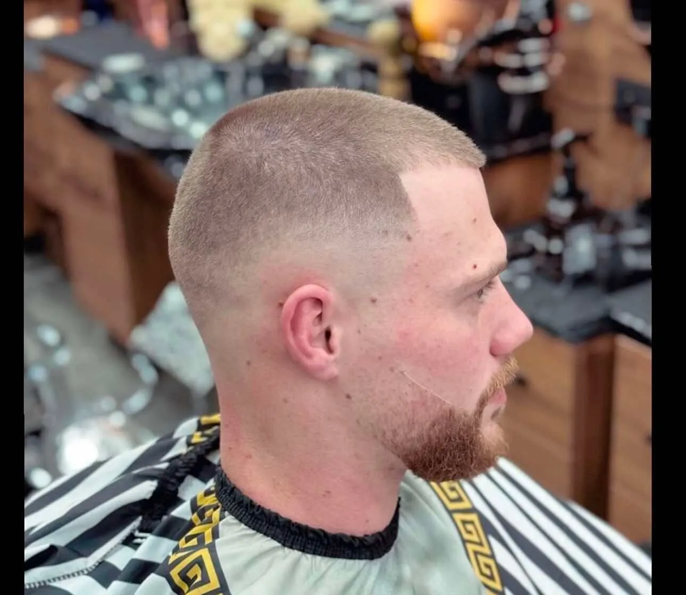
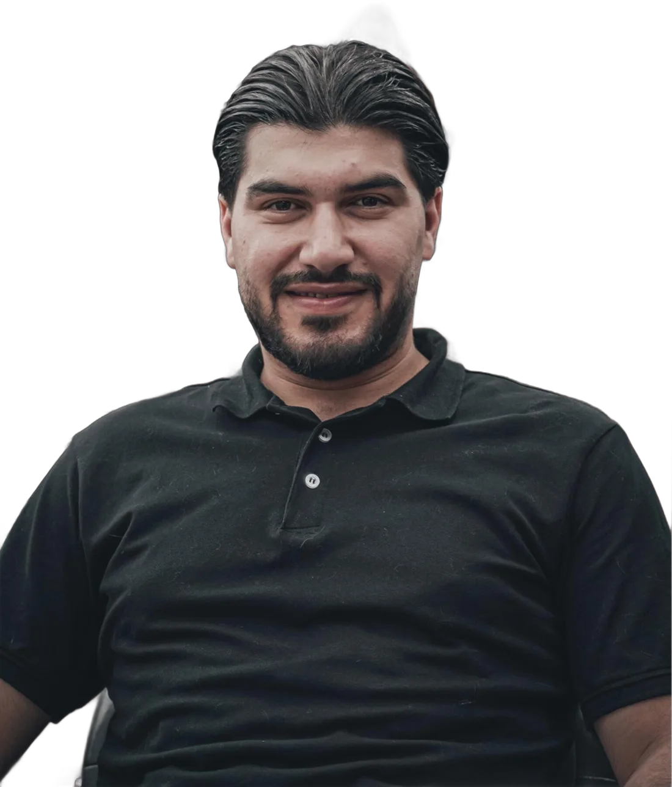
Wie binnenstapt, kijkt eerst naar boven: het plafond vol lichtende zeshoeken is moeilijk te missen. Daaronder staat de ploeg klaar: zes barbiers die je met plezier verder helpen, of je nu voor een fade, je baard of een scheerbeurt komt.
Je krijgt er een drankje bij terwijl je wacht, en de kleinste klanten gaan na hun knipbeurt met een snoepje naar huis. Betalen kan cash of contactloos met je gsm.
“Je krijgt er ook een drankje aangeboden en voor de kinderen zijn er snoepjes voor als ze flink waren.”
★★★★★“Ik had kapper Zanst, hij knipt kapot goed en doet wat je vraagt. Zeker een aanrader.”
★★★★★“Mijn zoon en ik komen hier minstens de laatste 2-3 jaar. De service is altijd super, vriendelijk en aangenaam. Een absolute aanrader voor zowel haar als baard.”
★★★★★“Echt een topbarber! Supervriendelijke service, neemt de tijd en levert altijd strak werk af. Ben heel tevreden. Zeker een aanrader!”
Geen afspraak nodig. Is het even druk, dan neem je plaats met een drankje en ben je snel aan de beurt.
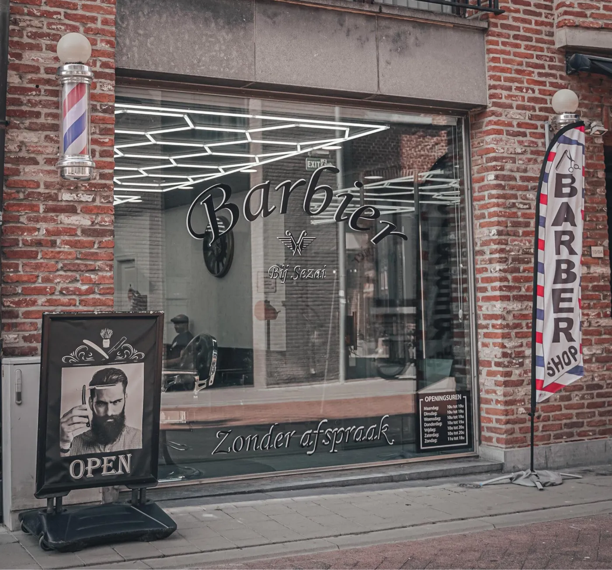
Ik maakte deze demo voor jullie om te tonen wat er kan. Na een kort gesprek maak ik er iets veel persoonlijkers van, helemaal naar jullie wens.
Vrijblijvend. Ik kom langs of we bellen.
Op maat, op jullie eigen domein.
Geen voorschot. Jullie betalen pas als alles klaar is.
Hosting, domeinnaam en kleine wijzigingen, zoals nieuwe openingsuren.
Omdat een voorbeeld meer zegt dan een mail. Zo zien jullie meteen wat er kan, en het kost jullie niets.
Nee. Het gesprek is vrijblijvend. Vinden jullie het niks, dan is het daarmee gedaan.
Na ons gesprek staat jullie site binnen 10 tot 14 dagen online.
Zeker. Jullie domeinnaam kan gewoon blijven, de nieuwe site komt in de plaats van de oude.
Nee, dat doe ik op basis van ons gesprek. Eigen foto's zijn mooi meegenomen, maar niet nodig om te starten.